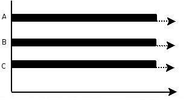
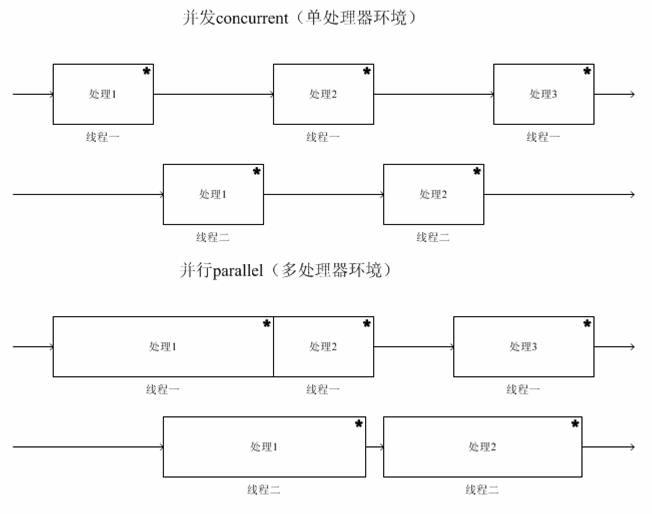

原文出处:本文由博客园博主蔡文君提供。
原文连接:https://www.cnblogs.com/caiwenjun/p/11740904.html
原文连接:https://www.cnblogs.com/caiwenjun/p/11740904.html
并发和并行
并发（concurrency）和并行（parallellism）：
- 解释一：并行是指两个或者多个事件在同一时刻发生；而并发是指两个或多个事件在同一时间间隔发生。
- 解释二：并行是在不同实体上的多个事件，并发是在同一实体上的多个事件。
- 解释三：并发是在一台处理器上“同时”处理多个任务，并行是在多台处理器上同时处理多个任务。如 hadoop 分布式集群。
所以并发编程的目标是充分的利用处理器的每一个核，以达到最高的处理性能。
并行(parallel)：指在同一时刻，有多条指令在多个处理器上同时执行。所以无论从微观还是从宏观来看，二者都是一起执行的。

并发(concurrency)：指在同一时刻只能有一条指令执行，但多个进程指令被快速的轮换执行，使得在宏观上具有多个进程同时执行的效果，但在微观上并不是同时执行的，只是把时间分成若干段，使多个进程快速交替的执行。

并行在多处理器系统中存在，而并发可以在单处理器和多处理器系统中都存在，并发能够在单处理器系统中存在是因为并发是并行的假象，并行要求程序能够同时执行多个操作，而并发只是要求程序假装同时执行多个操作（每个小时间片执行一个操作，多个操作快速切换执行）。
当有多个线程在操作时，如果系统只有一个 CPU，则它根本不可能真正同时进行一个以上的线程，它只能把 CPU 运行时间划分成若干个时间段，再将时间段分配给各个线程执行，在一个时间段的线程代码运行时,其它线程处于挂起状态.这种方式我们称之为并发（Concurrent）。
当系统有一个以上 CPU 时，则线程的操作有可能非并发。当一个 CPU 执行一个线程时，另一个 CPU 可以执行另一个线程，两个线程互不抢占 CPU 资源，可以同时进行，这种方式我们称之为并行（Parallel）。
